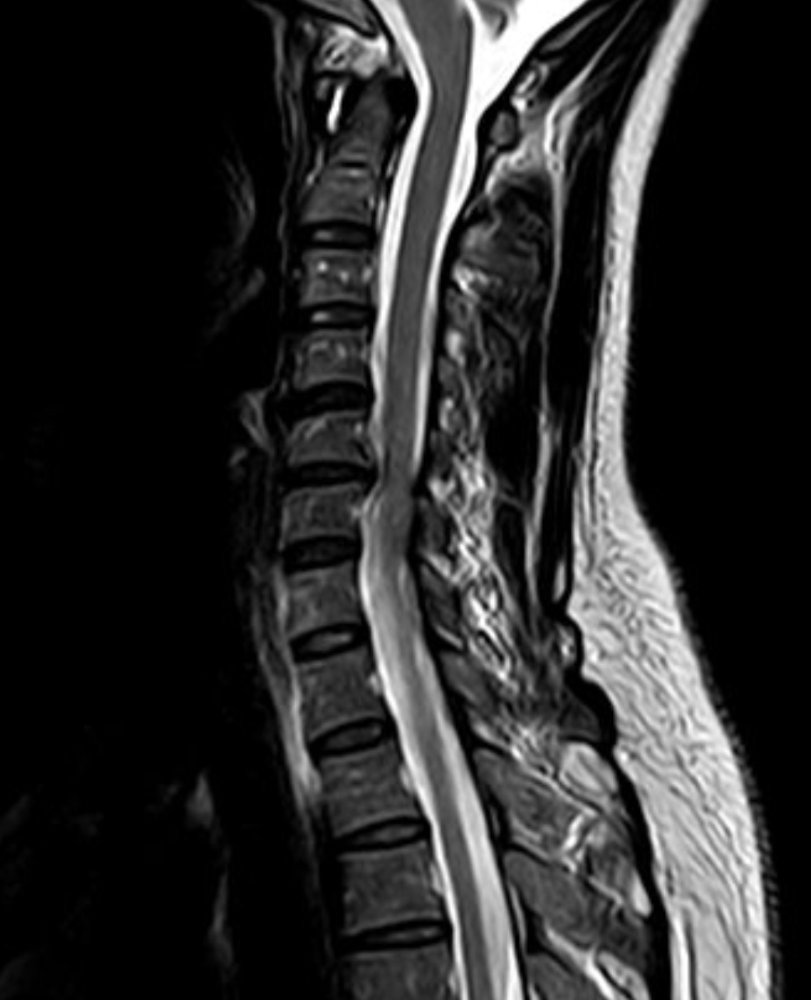
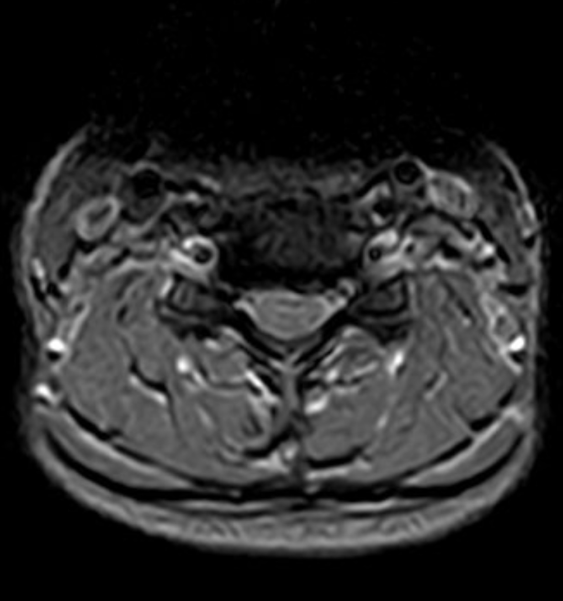
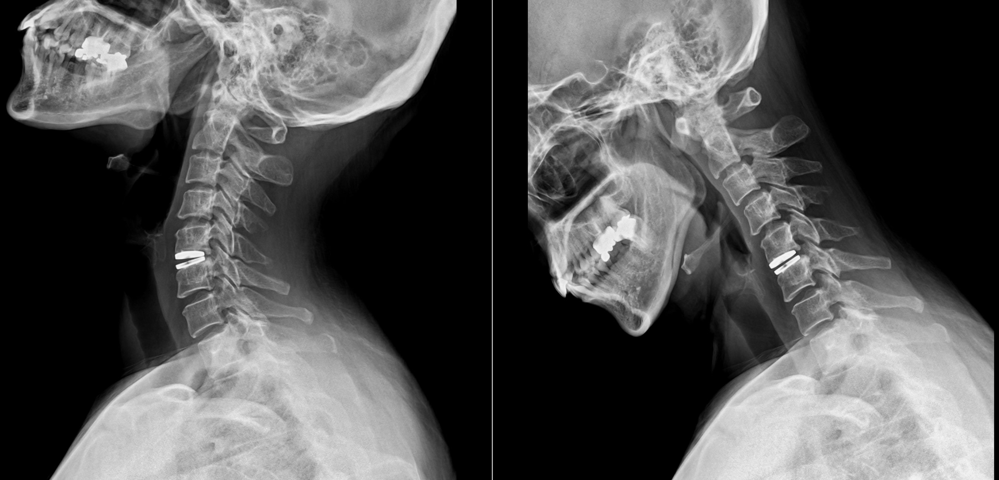
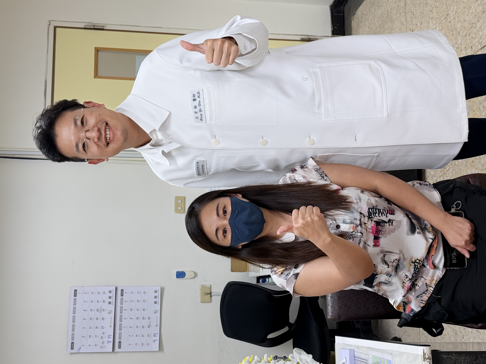

頸部疼痛合併左手臂麻痛，持續數個月沒有改善
43 歲女性患者，數個月來一直受到頸部疼痛與左手臂麻痛困擾。
一開始，她以為只是肩頸痠痛、姿勢不良，或長時間工作造成的肌肉緊繃。
但隨著時間拉長，疼痛不只停留在脖子，還一路延伸到左側手臂，伴隨麻木與不適感。
這樣的症狀反覆發作，逐漸影響生活與工作。對一位仍年輕、活動量與生活需求都高的患者來說，最擔心的不只是現在的麻與疼痛，也包括未來頸椎功能會不會受到影響。
頸部疼痛合併手臂麻痛，不一定只是肌肉痠痛。如果症狀持續數週到數個月，或出現手麻、手臂痛、握力下降，就需要進一步評估是否有頸椎神經壓迫。
檢查發現：頸椎第五、六節椎間盤突出合併神經壓迫
經過門診評估與頸椎 MRI 檢查後，發現患者的症狀主要來自頸椎第五、六節椎間盤突出。
突出的椎間盤壓迫到神經，造成左側手臂麻痛，這與她的症狀分布相符合。
頸椎神經受到壓迫時，常見症狀包括：
- 頸部疼痛。
- 肩膀或膏肓附近疼痛。
- 手臂一路麻痛。
- 手指麻木。
- 握力下降。
- 拿東西或做精細動作變得不順。
患者的狀況屬於：
頸椎椎間盤突出造成神經壓迫，且症狀已經持續影響生活。

圖片說明：術前 MRI 可見頸椎第五、六節椎間盤突出，壓迫神經，與左手臂麻痛症狀相符。

治療考量：年輕患者，除了減壓，也要考慮保留頸椎活動度
頸椎手術不是只有一種方式。
對於頸椎椎間盤突出合併神經壓迫，手術目標首先是解除神經壓迫。但神經減壓之後，椎間空間要如何重建，會依照患者年齡、活動需求、退化程度、頸椎穩定性與關節狀況一起判斷。
傳統頸椎融合手術可以提供穩定支撐，對於嚴重退化、不穩定、骨刺明顯或關節磨損較嚴重的患者，是很重要的治療方式。
但這位患者年紀較輕，仍有較高的工作與活動需求。經過影像評估後，頸椎活動條件仍適合保留，因此在與患者充分討論後，選擇進行人工椎間盤置換術。
人工椎間盤置換的目的，是在清除壓迫神經的病灶後，透過可活動式人工椎間盤，盡量保留該節段較自然的活動度。
對適合的患者來說，人工椎間盤置換有幾個重要考量：
- 解除神經壓迫。
- 維持椎間高度。
- 保留頸椎活動度。
- 可能減少上下相鄰節段的代償負擔。
因此，這次治療不是單純處理「手麻」，而是同時考慮患者未來頸椎功能與長期生活品質。
治療方式：前頸椎減壓合併人工椎間盤置換術
患者接受前頸椎減壓合併人工椎間盤置換術。
手術經由頸部前側小切口，順著自然解剖間隙進入病灶位置，移除壓迫神經的椎間盤突出組織，讓受壓迫的神經重新獲得空間。
在完成神經減壓後，再置入人工椎間盤，協助維持椎間高度與頸椎活動功能。
術後頸椎 X 光追蹤，包括屈曲與伸展角度影像，可以用來觀察人工椎間盤位置，以及頸椎在活動時的穩定與活動狀況。

圖片說明：術後 X 光可見 C5/6 人工椎間盤位置，協助維持椎間高度與頸椎功能。Flexion-extension view 可觀察頸椎活動時人工椎間盤位置與節段活動狀況。
治療後變化：恢復良好，重新回到正常生活
手術後，患者恢復情況良好。
原本困擾數個月的頸部疼痛與左手臂麻痛逐步改善，日常活動也慢慢恢復。
後續門診追蹤時，影像顯示人工椎間盤位置穩定，患者整體恢復狀況良好。
對這位患者來說，最重要的改變，不只是影像上神經壓迫被解除，而是生活不再一直被頸部疼痛與手臂麻痛限制。

文宏裕醫師的治療觀點
頸椎人工椎間盤置換術，不是每一位頸椎神經壓迫患者都適合。
真正重要的是判斷：
- 神經壓迫的位置是否和症狀相符？
- 頸椎活動度是否仍然良好？
- 有沒有明顯頸椎不穩定？
- 關節退化或骨刺是否嚴重？
- 患者的年齡、工作與生活需求是什麼？
如果頸椎已經嚴重退化、不穩定或關節磨損明顯，融合手術可能反而是更安全、更穩定的選擇。
但如果患者年紀較輕、病灶條件合適、頸椎仍保有良好活動度，人工椎間盤置換可以在解除神經壓迫後，盡量保留較接近原本頸椎的活動功能。
這位患者的案例提醒我們，頸部疼痛合併手臂麻痛，不一定只是肩頸痠痛。如果症狀持續數週到數個月，甚至影響工作與生活，就應該進一步檢查是否有頸椎椎間盤突出或神經壓迫。
能保留活動度的，我們盡量保留；
需要穩定融合的，我們精準做好支撐。
不該開的刀，我不開；該開的刀，我做到最好。
手術不是目的，重新回到生活才是目的。
把時間留給生活，不留給疼痛。
案例提醒
本案例已去識別化處理，內容僅作為疾病與治療方式說明。
每位患者的頸椎退化程度、神經壓迫位置、治療方式與恢復速度都不同，實際治療仍需經由門診評估、理學檢查與影像判讀後，由醫師與患者共同討論決定。
若頸部疼痛合併手麻、手臂無力、握力下降、走路不穩，或出現雙手雙腳麻木無力、大小便控制異常，應儘快就醫評估。
手術不是目的，重新回到生活才是目的。
把時間留給生活，不留給疼痛。